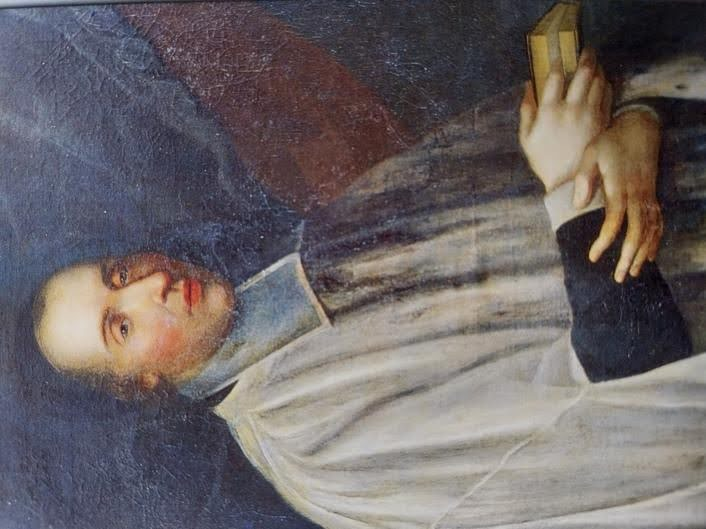

>

Vénérable Bénigne Joly
Prêtre, le Père des pauvres de Dijon
1644-1694
Prière
Seigneur, toi qui est plein d’amour pour chacun de tes
enfants, regarde avec tendresse nos malades et tous ceux
qui sont dans la nécessité : ils souffrent et ont besoin de
réconfort.
Unis à tous ceux qui les soignent et les visitent, c’est avec
foi et confiance que nous te prions. Par l’intercession de
Bénigne Joly, « le Père des pauvres et des malades à
Dijon », accorde à nos malades et à tous ceux qui sont dans la nécessité le soulagement et la
guérison qui leur rendront la paix.
Ainsi, avec eux, unis à Bénigne Joly et à tous les saints du ciel, ensemble, nous pourrons te
louer et te remercier pour les siècles des siècles. Amen.
Pour toi Seigneur, le chant de notre cœur. Tu es le Christ, l’Agneau vainqueur !
Les yeux fixés sur toi, en contemplant ta Croix, nous t’acclamons, Jésus Sauveur !
1 - Un chemin s’ouvre sous nos pas, notre espérance en toi renaît !
J’avancerai sans crainte devant toi, dans la confiance et dans la paix !
2 - Dans les épreuves et les combats, dans les périls, gardons la foi !
En tout cela nous sommes les vainqueurs, par Jésus-Christ notre sauveur !
3 - Inscris en nous la loi d´amour, en notre cœur la vérité !
Dans le secret, Seigneur, enseigne-nous. Que nous brûlions de charité !